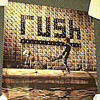
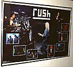
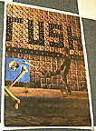
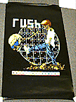
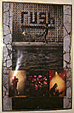
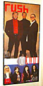
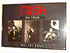
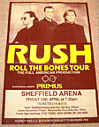

"square album cover"
24" x 24"
Roll The Bones album cover.
|

"black concert shot"
34" x 22"
Large picture of Rush playing in concert, with seven smaller concert shots
overlaid the large one. All pictures are taken from the Roll The Bones tour
book.
|

"album cover"
24" x 34"
Close-up of the boy on the cover of Roll The Bones kicking a skull. The three
"flying" bones from inside the booklet are off to the left. This is a UK
poster printed on heavy paper; the image is made up of small dots.
|

"skeleton kid"
22" x 34"
Black background with kid kicking skull, with the kid turned into a skeleton
and the skull wearing sunglasses.
|

"tour poster"
24" x 36"
Poster only sold during the Roll The Bones tour. Has elongated album cover in
the middle, with a concert shot of each band member at the bottom.
|

"generic tour poster w/mr big"
15.5" x 36"
"Generic" tour poster for Roll The Bones. Promo shot of the band at the top,
bottom section has promo shot of Mr. Big, with area left blank to write in
date and venue.
|

"gray tour poster
30" x 20"
Dark gray poster with three tour pictures of the band members in black &
white. Rush is written in the top center in red, "on tour" written below it in
white, with "roll the bones" at the botton in white.
|

"sheffield arena tour date"
40" x 60"
Large tour poster for Sheffield Arena. Band portrait on top in brown, "RUSH"
and "Roll The Bones Tour" below in yellow. Below is the date, venue and ticket
information.
|